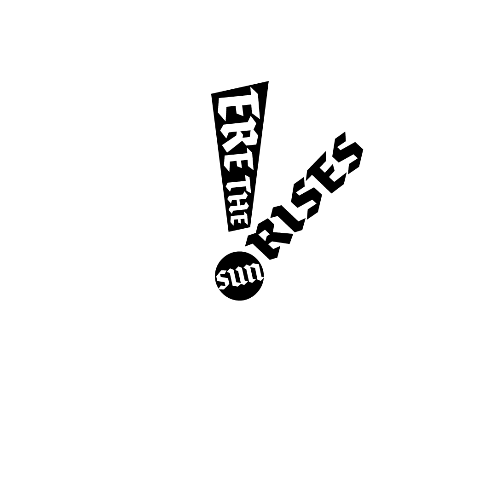

Type: Typography
Project: Mantra Merch
Date: October 2023
A composition created using only type and expressing a personal mantra. This lockup was applied to a tote bag and made into three animations using Photoshop. “Ere the sun rises” is said by King Theoden in The Return of the King as his army prepares to enter battle.
I chose to use Brokenscript designed by Just van Rossum to reflect the medieval setting of the Lord of the Rings movies and books. The composition is inspired by futurism and propaganda posters of the early 20th century as I tried to imagine what a motivational poster designed for the people of Rohan would look like.
Project: Mantra Merch
Date: October 2023
A composition created using only type and expressing a personal mantra. This lockup was applied to a tote bag and made into three animations using Photoshop. “Ere the sun rises” is said by King Theoden in The Return of the King as his army prepares to enter battle.
I chose to use Brokenscript designed by Just van Rossum to reflect the medieval setting of the Lord of the Rings movies and books. The composition is inspired by futurism and propaganda posters of the early 20th century as I tried to imagine what a motivational poster designed for the people of Rohan would look like.
